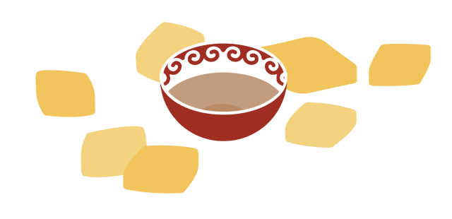

Бешике салуу
Бешик (колыбель) — кыргыз элинин турмуш-тиричилигинин маанилүү буюму. Айрым маалыматтарга караганда, Орто Азияда болжол менен 10-11-кылымдарда, Караханиддер доорунда пайда болгон, бирок жалпысынан түрктөрдүн бешиги абдан окшош.
Убакыттын өтүшү менен бешиктин жасалгасы түрдүү элдерде өзгөрүп, башкача формага ээ болуп, бүгүнкү күндө оюм-чийим, оюм-чийим, түс жагынан айырмачылыктарга ээ.Бешикти даярдоо жыгач бланкты тандоодон башталат. Процесс ден соолук, жакшы уйку жана балага башка жакшылыктарды каалоо менен коштолот.
Бешикти жасалгалоодо эң негизгиси аны көчмөн шартта: ат менен, төө же араба менен ташуу оңой. Ошол эле учурда анын формасы баланын аттан кулап кетсе да коопсуздугун камсыздайт. Ошондой эле апасы үй жумуштары менен алек болуп турганда, оролгон бала бешиктен түшө албайт.Баланы жиндерден, курт-кумурскалардан жана жаныбарлардан коргоо үчүн бешикти көбүнчө арчадан жасашат, ал арчанын бактерициддик жана сезгенүүгө каршы касиеттери менен белгилүү болгон эфир майлары жана тар жыты бар чайырлар көп.
Бешикти жасоодо мык колдонулбайт – уламыш боюнча мык салынган бешик көпкө чыдабайт. Бардык жыгач бөлүктөр табигый материалдардан же булгаарыдан жасалган күчтүү шнурлар менен байланышкан.Кызга же жигитке бешик жасалгасы боюнча айырмаланбайт, эгер ал атайын жасалган болсо, анда наристенин жынысына жараша оюм-чийим менен кооздолуп, тиешелүү түскө боёлот.
Бешикке биринчи төшөө салты
Жаңы төрөлгөн ымыркайды бешикке салуу кыргыздын абдан байыркы салты. Бул баланын өмүрүнүн жетинчи күнүндө жасалат. Бешикти эне тараптан туугандар алып келишет, анын урматына дайыма той берилет. Майрам учурунда баланы бешикке салуу жөрөлгөсүн сыйлуу байбичелер, көп балалуу энелер аткарышат. Ага чейин 9 чүкөө бактылуу өмүр тилеп коюлган. Анан байбичелер чүкөөнү баштыкка салып коюшат, бул баланын өмүр казынасына «байлык жана көп мал» келгенин билдирет. Бала чоңойгондо чүкөө менен ойносун деп баштык бешикке илинген же керебеттин башына коюлган.
Жаңы төрөлгөн ымыркайды бешикке салуу кыргыздын абдан байыркы салты. Бул баланын өмүрүнүн жетинчи күнүндө жасалат. Бешикти эне тараптан туугандар алып келишет, анын урматына дайыма той берилет. Майрам учурунда баланы бешикке салуу жөрөлгөсүн сыйлуу байбичелер, көп балалуу энелер аткарышат. Ага чейин 9 чүкөө бактылуу өмүр тилеп коюлган. Анан байбичелер чүкөөнү баштыкка салып коюшат, бул баланын өмүр казынасына «байлык жана көп мал» келгенин билдирет. Бала чоңойгондо чүкөө менен ойносун деп баштык бешикке илинген же керебеттин башына коюлган.

Каалоо-тилектерин айтып жатканда жанына ар кандай буюмдар коюлчу. Бала болсо, балта (атчан болоттой катуу болсун), камчы (эр дайым ат үстүндө болсун) же балка (бардык өнөрдүн устасы болсун) деп коюшчу. Кыздар бешикке кайчы (аны уста кылуу үчүн) жана калем (акылмандыктын, билимдин белгиси) салышчу.

аланы кымкап жаткан аялдын оозуна төрт бурчтуу боорсок салышкан, ал ичинен балага каалоо-тилек айткан. Муну баланын кыжырланбашы үчүн кылышкан, ал эми төрт бурчтуу форма болсо береке көбөйсүн деген маанини билдирген.

Бешикке бала жаткырылгандан кийин, аны жети адамдын кийими менен жаап коюшкан. Бул ар кандай мүнөздөрдү (акылдуу, шайыр ж.б.) символдоштурган жана бала ошол адамдарга окшошсун деген тилек менен жасалган.
Андан соң эне бешикти көтөрүп, үч кадам артка жылып, жыйналган элге таазим кылып, баланы элге пайдасы тийген, тирек боло турган инсан катары тарбиялоого убада берген. Ошондон кийин чогулган адамдар бата берип, бул эненин жоопкерчилигин ого бетер күчөткөн.
Баланы бешикке салуу жөрөлгөсүнөн кийин, ыраазычылык белгиси катары эненин башына ак жоолук салышкан. Ушул жөрөлгөдөн кийин бешик ыры (колыбельная) жаралган деп эсептелет.
Андан соң эне бешикти көтөрүп, үч кадам артка жылып, жыйналган элге таазим кылып, баланы элге пайдасы тийген, тирек боло турган инсан катары тарбиялоого убада берген. Ошондон кийин чогулган адамдар бата берип, бул эненин жоопкерчилигин ого бетер күчөткөн.
Баланы бешикке салуу жөрөлгөсүнөн кийин, ыраазычылык белгиси катары эненин башына ак жоолук салышкан. Ушул жөрөлгөдөн кийин бешик ыры (колыбельная) жаралган деп эсептелет.